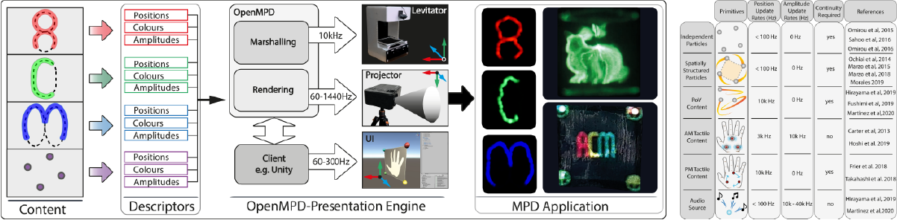

Roberto Montano-Murillo, Ryuji Hirayama and Diego Martinez Plasencia, ACM Transactions on Graphics (2023) [Paper link].
Phased arrays of transducers have been quickly evolving in terms of software and hardware with applications in haptics (acoustic vibrations), display (levitation) and audio. Most recently, Multimodal Particle-based Displays (MPDs) have even demonstrated volumetric content that can be seen, heard, and felt simultaneously, without additional instrumentation. However, current software tools only support individual modalities and they do not address the integration and exploitation of the multimodal potential of MPDs. This is because there is no standardized presentation pipeline tackling the challenges related to presenting such kind of multi-modal content (e.g., multi-modal support, multi-rate synchronization at 10 KHz, visual rendering or synchronization and continuity). This paper presents OpenMPD, a low-level presentation engine that deals with these challenges and allows structured exploitation of any type of MPD content (i.e., visual, tactile, audio). We characterize OpenMPD’s performance and illustrate how it can be integrated into higher-level development tools (i.e., Unity game engine). We then illustrate its ability to enable novel presentation capabilities, such as support of multiple MPD contents, dexterous manipulations of fast-moving particles or novel swept-volume MPD content.